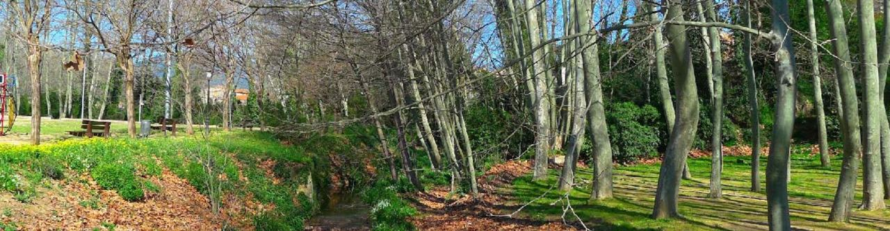

Ruta · Palautordera
La ruta ens porta a encerclar el nucli de Palautordera a través dels dos cursos d’aigua que l’emmarquen: el torrent del Reguissol i el riu la Tordera. Sense allunyar-nos de la població en cap…